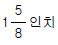

잠수기능사 (2002-04-07 기출문제)
1과목: 잠수물리
1. 다음 중 절대 압력이란?
- 압력계기가 가리키는 압력을 말한다.
- 지구표면에 둘러 쌓여 있는 대기중의 압력을 말한다.
- 계기압과 대기압의 합을 말한다.
- 해면상의 압력을 말한다.
(정답률: 89%)

2. 해류의 생성 원인으로 부적합한 것은?
- 수온의 차이
- 지진과 화산폭발
- 지구의 회전
- 해와 달의 인력
(정답률: 79%)
3. 우리나라 근해에서 간만의 차에 의해 생기는 조류는 약 몇시간 마다 흐름이 바뀌는가?
- 6시간
- 12시간
- 18시간
- 24시간
(정답률: 78%)
4. 호흡공기속에 활성기체로서 가장 많이 있으며 고압하에서 중독증세를 나타내는 성분은?
- 헬륨(He)
- 탄산가스(CO2)
- 질소(N2)
- 산소(O2)
(정답률: 50%)
5. 다음 중 불활성 기체가 아닌 것은?
- 질소(N2)
- 산소(O2)
- 헬륨(He)
- 네온(Ne)
(정답률: 61%)
6. 해면상에 작용하는 절대압력은 얼마인가?
- 0.445 PSI
- 4.45 PSI
- 14.7 PSI
- 29.4 PSI
(정답률: 93%)
7. 바닷물과 민물의 100m 수심에서의 수압은 어떠한 차이가 있는가?
- 수압은 같다.
- 바닷물의 수압이 크다.
- 민물의 수압이 크다.
- 수온에 따라 다르다.
(정답률: 81%)
8. 해면 출발로부터 잠수를 다 끝내고 해면도착까지 계산된 시간을 무엇이라 하는가?
- 총 잠수시간
- 표면 간격시간
- 총 감압시간
- 총 해저 체류시간
(정답률: 75%)
9. 잠수할 때 수심이 깊어질수록 잠수사가 숨쉬는 공기의 밀도는?
- 높아진다.
- 변함없다.
- 낮아진다.
- 순해진다.
(정답률: 85%)
10. 물의 열전도율은 공기보다 약 몇배나 더 큰가?
- 약10배
- 약25배
- 약45배
- 약60배
(정답률: 86%)
11. 스쿠버 잠수사가 해면상에서 호흡을 멈추고 쓰러졌을 때의 올바른 구급법은?
- 정신을 잃지 않도록 얼굴을 때리며 소생토록 노력한다.
- 제일 가까운 보오트나 해변으로 끌어올려 구급한다.
- 구명의를 띄우고 주위의 도움을 요청한다.
- 즉시 해면상에서 인공호흡을 시작해야 한다.
(정답률: 88%)
12. 감압병의 발생위치와 예고는 불가능하며,그 중 국부의 통증 증상에서 다리부분과 팔부분의 발생 비율은?
- 40:60
- 50:50
- 30:70
- 20:80
(정답률: 67%)
13. 감압정지의 위치는 잠수사 몸의 어느 부분이 가장 알맞는가?
- 머리
- 목
- 가슴
- 허리
(정답률: 93%)
14. 상승 중 폐가 정상보다 많이 팽창되어 생길 수 있는 잠수병은?
- 감압병
- 기체 색전증
- 폐렴
- 공기 마취
(정답률: 76%)
15. 호흡기체 속의 가스는 우리 인체 성분 중 어느 것에 가장 잘 용해 되는가?
- 혈액
- 지방질
- 근육
- 뼈
(정답률: 83%)
2과목: 잠수위생
16. 잠수하여 내려가는 도중 귀가 아프면 어떻게 하는 것이 적절한가?
- 그날 잠수를 포기한다.
- 약간 위로 올라가 압력균형을 한다.
- 참고 조금 내려가면 괜찮다.
- 해면으로 올라와서 압력균형을 한다.
(정답률: 85%)
17. 체구 또는 체질, 연령에 감압병 발생율은 차이가난다. 다음 중 감압병 발생율이 높은 것 끼리 연결된 것은?
- 비만한 사람 - 젊은 사람
- 비만한 사람 - 늙은 사람
- 비만치 않은 사람 - 젊은 사람
- 비만치 않은 사람 - 늙은 사람
(정답률: 95%)
18. 해저에서 작업을 하던 중 불의의 사고로 수면을 향한 급상승이 초래되었다. 허파 팽창과 파열을 예방하기 위한 다음 조처 중 가장 옳은 것은?
- 보다 깊은 수심으로 잠수하기 위하여 노력해야 한다.
- 수면에 가까워 질수록 숨을 많이 내 뿜어야 한다.
- 깊은 수심에서는 많이, 얕은 수심에서는 조금 내뿜어야 한다.
- 전체 수심에서 균등하게 내뿜어야 한다.
(정답률: 57%)
19. 줄당김 신호중 잠수사가 보조사에게 4회 당김신호는?
- 끌어당겨 올려라
- 줄을 늦추어 달라
- 늦춘 줄을 당겨라
- 밑바닥에 닿았다
(정답률: 87%)
20. 다음 어류 중 독가시를 지니고 있지 않은 것은?
- 곰치
- 쑤기미
- 쏠배감펭
- 쏠종개
(정답률: 81%)
21. 잠수작업 중 비상 상승을 시도했던 잠수사의 목 주변이 부풀어 오르고 손으로 만졌을 때 바스락 거리는 소리가 들린다. 다음 중 옳은 것은?
- 매우 위급한 감압병이다.
- 허파가 파열되어 피부 아래에 공기가 들어 갔다.
- 목 주위를 지나가는 정맥속에 커다란 공기 방울이 생겼다.
- 매우 위급한 기체 색전증이므로 급히 수중재가압 치료를 해야 한다.
(정답률: 59%)
22. 다음 잠수과정 중 현기증발생 가능성이 가장 높은 때는 언제인가?
- 하잠 중
- 해저도착 직후
- 해저출발 직후
- 상승 중
(정답률: 62%)
23. 잠수할 때 숨쉬는 공기 중 기름 냄새가 날 수 있는 경우는?
- 잠수를 너무 깊게 할 때
- 콤프레샤의 필터(정화기)가 좋지 않을 때
- 콤프레샤의 엔진배기 가스가 많이 나올 때
- 비가 오는날 콤프레샤를 돌릴 때
(정답률: 56%)
24. 산소 중독의 증세중 틀린 것은?
- 관절의 통증
- 근육의 경련
- 현기증
- 호흡 곤란
(정답률: 71%)
25. 잠수 중 탄산가스 축적의 예방 방법 중 틀린 것은?
- 긴장을 풀고 천천히 심호흡을 한다.
- 호흡기 성능이 좋은 것을 사용한다.
- 잠수 중 숨을 참지 않는다.
- 숨을 조금식 빨리 쉰다.
(정답률: 84%)
26. 물안경을 선택할 때 결정적 요인이 아닌 것은?
- 얼굴이 잘 맞아야 한다.
- 배수변이 있어야 한다.
- 유리가 열처리된 것이어야 한다.
- 물이 새지 않아야 한다.
(정답률: 64%)
27. 잠수공급용 공기 압축기의 운전시 가장 중요한 사전점검 사항은?
- 연료유 계통
- 시동을 위한 전기계통
- 윤활계통
- 압력계통
(정답률: 62%)
28. 챔버의 기본 밸브 색깔중 틀린 것은?
- 산소공급 밸브 : 녹색
- 공기공급 밸브 : 회색
- 공기배출 밸브 : 은색
- 공기공급 밸브 : 흑색
(정답률: 69%)
29. 스쿠버 잠수에서 스노쿨(Snokel)사용의 장점이 아닌것은?
- 수면에서 탱크의 공기를 아낄 수 있다.
- 표면수영 시 잠수사의 피로를 덜어준다.
- 얼굴을 물속에 둔채 수영할 수 있다.
- 잠수사의 안면압착을 예방한다.
(정답률: 65%)
30. 스쿠버 실린더에 압축공기를 충전하는 것 중 틀린 것은?
- 분당 400 psi 이내 충전
- 분당 600 psi 이상 충전
- 예비공기변을 내린다.
- 샤를의 법칙과 관계 된다.
(정답률: 73%)
3과목: 잠수장비
31. 후카(Hooka)장비를 사용 수심 20m에서 2명이 동시에 잠수하고자 할 때 필요한 공기량은 1분당 몇ℓ 인가?
- 120
- 240
- 1101
- 210l
(정답률: 75%)
32. 스쿠버 잠수용 호흡 조절기의 분해소제시 녹을 제거하기 위하여 빙초산을 혼합한다. 비율은?
- 물 : 빙초산 = 5 : 1 (5배액)
- 물 : 빙초산 = 10 : 1 (10배액)
- 물 : 빙초산 = 16 : 1 (16배액)
- 물 : 빙초산 = 20 : 1 (20배액)
(정답률: 56%)
33. 스쿠버 탱크에 공기를 주입하는 이동용 콤퓨레서의 흡입구 설치방법 중 옳은 것은?
- 바람이 부는 방향으로 2m 이하로 낮게 설치
- 바람이 부는 방향으로 2m 이상으로 높게 설치
- 바람이 부는 반대방향으로 2m 이하로 낮게 설치
- 바람이 부는 반대방향으로 2m 이상으로 높게 설치
(정답률: 86%)
34. 잠수장비에는 방수에 O-링이 꼭 필요하다. 다음 장비 중 O-링을 사용치 않는 것은?
- 부이
- 공기통의 밸브
- 호흡기의 내부
- 수중 랜턴
(정답률: 53%)
35. 잠수용 공기압축기 엔진에서 실린더와 피스톤 간극이 적을 때 일어날 수 있는 현상은?
- 피스톤의 측압이 크게 일어난다.
- 잡음이 많이난다.
- 피스톤이 소손되어 실린더와 붙는다.
- 오일이 연소실로 올라간다.
(정답률: 59%)
36. 운전중인 공기압축기를 정지 후 조정밸브를 잠그는 이유는?
- 드레인을 제거하여 냄새를 없애기 위하여
- 잔여공기를 배출하여 파이프라인의 손상을 감소시키기 위하여
- 파이프라인의 성능을 증가시키기 위하여
- 다음 운전시 엔진의 부하를 적게하여 시동을 용이하게 하기 위하여
(정답률: 76%)
37. 재압챔버(CHAMBER)의 재압실 사용을 위한 압력시험에 대한 설명 중 틀린 것은?
- 최초 설치시
- 이동후나 재설치시
- 설치된 장소에서 매 5년마다 실시
- 매 6개월마다 실시
(정답률: 47%)
38. 스쿠버용 공기통의 수압검사는 상용압력보다 몇 배까지 올려 검사하는가?
- 5/3배
- 2배
- 3배
- 5배
(정답률: 50%)
39. 알루미늄 스쿠버 실린더의 내부소제용 물질의 비율 중 맞는 것은?
- 자갈 4리터 : 물 4리터
- 모래 3리터 : 물 3리터
- 자갈 5리터 : 물 2.5리터
- 모래 5리터 : 물 2.5리터
(정답률: 70%)
40. 스쿠버용 호흡기(Regulator)의 일단계에서 조절되는 중간 압력은?
- 수압과 같은 압력
- 수압보다 약 9kg/㎝2(≒130psi)정도 높은 압력
- 수압보다 약 5kg/㎝2(≒70psi)정도 높은 압력
- 수압보다 약 16kg/㎝2(≒230psi)정도 높은 압력
(정답률: 81%)
41. 수중용접 기술중 맞지 않는 것은?
- 수평용접시 각도는 15° ∼ 45° 유지한다.
- 야간 작업시의 보호렌즈는 No4를 사용한다.
- 두상용접시 각도는 25° ∼ 35° 유지한다.
- 자체 소모법으로 진행시킨다.
(정답률: 67%)
42. 일반적으로 두꺼운 금속철판 절단에 사용되는 전극봉은?
- 스틸 튜브라(STEEL TUBULAR)
- 일반 전극봉
- 쎄라미크 튜브라(CERAMIC TUBULAR) 전극봉
- 철판두께에 따라 다르다
(정답률: 47%)
43. 좌초선 이초시 사용되는 표준 이초장비 비치기어에 4.12cm(

) 와이어는 어떻게 사용되는가?- 50파담 2개, 100파담 1개
- 50파담 2개, 100파담 2개
- 50파담 1개, 100파담 2개
- 50파담 2개, 100파담 3개
(정답률: 42%)
44. 직경 6인치[15cm]이상의 철봉이나 각봉을 폭약으로 절단 하려할시 어떠한 방법으로 장진하여야 높은 효과를 얻을 수 있는가?
- 한쪽만 장진한다.
- 지환식(가락지)으로 장진한다.
- 계단식으로 장진한다.
- 양쪽에 장진한다.
(정답률: 69%)
45. 수중폭파에 사용되는 회로검사기에는 뇌관이 기폭되는데 필요한 전압[V]의 얼마에 해당되는 전류[A]가 흐르는가?
- 1/2
- 1/5
- 1/10
- 1/15
(정답률: 53%)
4과목: 잠수작업
46. 소수 인원으로 제한된 구역에서 수중탐색시 가장 좋은 방법은?
- 수영자 예인탐색
- 원탐색
- 그리드라인(GRID LINE) 설치법
- 사자스 탐색
(정답률: 49%)
47. 카메라의 조리개 사용법에서 다음 중 맞는 것은?
- 조리개 구멍이 클수록 빛이 적게 들어온다.
- 조리개 구멍이 적을수록 빛이 많이 들어온다.
- 조리개 구멍이 적을수록 빛이 적게 들어온다.
- 조리개 구멍에 관계없이 빛은 일정량으로 들어온다.
(정답률: 68%)
48. 다음 폭약 중 감도가 가장 둔한 폭약은 어느 것인가?
- PENT
- 레드 아싸이드(LEAD ACIDE)
- TNT
- 뇌홍
(정답률: 65%)
49. 수중폭파시 한번 기폭시켜 순차적으로 여러개를 폭파시키려면 어떤 뇌관을 사용하여야 되는가?
- 전기식 뇌관
- 비전기식 뇌관
- 지연식 뇌관
- 발전식 뇌관
(정답률: 75%)
50. 절단에서 사용되는 가스(GAS) 호스중 적색호스는 어떤 기체에 사용 되는가?
- 수소
- 산소
- 질소
- 공기
(정답률: 66%)
51. 수중에서 금속 아크 (METAL-ARC)절단에 가장 효과적인 발전기의 선택은?
- DC 200 AMP
- AC 300 AMP
- DC 400 AMP
- AC 400 AMP
(정답률: 53%)
52. 두께 1인치 이상의 철판을 강철 튜브(STEEL TUBULAR)절단 봉으로 절단할 시 어떻게 하여야 효과적으로 절단되는가?
- 톱질 하는 방법으로 한다.
- 90˚ 유지하며 진행시킨다.
- 60˚ 유지하며 진행시킨다.
- 45˚ 유지하며 진행시킨다.
(정답률: 47%)
53. 밀폐된 격실을 절단할 때 취해야할 가장 필요한 조치는?
- 잠수사가 모서리에 다치지 않게 안전조치를 한다.
- 모서리에 전극봉을 잘 접촉시킨다.
- 가스 누출구를 만들어야 한다.
- 가능한 빨리 절단한다.
(정답률: 71%)
54. 용접봉에 피복제(Flux)를 한 이유 중 틀린 것은?
- 아크의 유지 지속
- 절연을 돕는다
- 봉의 부식을 방지
- 봉의 주위에서 아크 발생 방지
(정답률: 41%)
55. 수중시계가 흐린 수중에서 후렛쉬 사용에 관한 내용 중 가장 적절한 것은?
- 혼탁한 수중에서는 사용할 필요가 없다.
- 야간 촬영이 효과적이다.
- 강도가 높은 후렛쉬가 효과적이다.
- 강도가 낮은 후렛쉬가 효과적이다.
(정답률: 40%)
56. MAPP가스 절단방법을 설명한 것이다. 틀린 것은?
- 전기가 필요 없으며 비금속류도 절단 할 수 있다.
- 스래그의 영향이 적다.
- 간단한 경량 잠수기구로도 절단 가능하다.
- 사용기체는 수소와 산소이다.
(정답률: 60%)
57. 수중탐색의 방법은 대략 몇 종류가 있는가?
- 2종류
- 3종류
- 4종류
- 5종류
(정답률: 65%)
58. 수중 촬영시 피사계 심도를 설명한 것 중 맞는 것은?
- 촬영거리가 가깝고 조리개구멍을 크게 할수록 피사계심도는 높아진다.
- 촬영거리가 가깝고 조리개구멍을 크게 할수록 피사계심도는 얕아진다.
- 화상 전체의 밝기를 고르게 해주는 역할이다.
- 영상을 필름에 정확히 맞추고 빛의 양을 조절하는 기능이다.
(정답률: 56%)
59. 다음의 수중 촬영시 주의 사항으로 틀린 것은?
- 카메라가 흔들리지 않도록 한다.
- 정확하게 피사체의 앵글을 잡는다.
- 가능한 피사체를 크게 찍는다.
- 힘차게 셔터를 누른다.
(정답률: 72%)
60. 얼음 밑 다이빙(ICE DIVING)을 할 때 가장 중요한 안전 장비구는?
- 수중전등
- 보온 잠수복
- 안전밧줄
- 온수 잠수기 장비
(정답률: 85%)